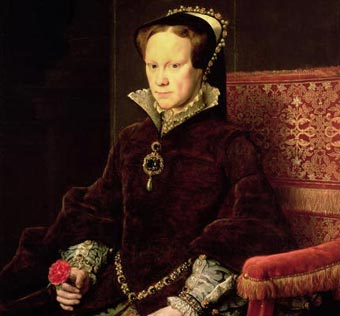

Maria Tudor
(Greenwich, Inglaterra, 1516 - Londres, 1558) Reina de Inglaterra e Irlanda.
Hija de Enrique VIII y Catalina de Aragón,
la historiografía tradicional anglosajona la ha presentado como un ser cruel y despiadado.
Siendo de formación católica, son comprensibles las suspicacias que su acceso al trono originó en la sociedad inglesa,
cada vez más cercana al protestantismo.

VII de Inglaterra
Su intención fue en todo momento restablecer el catolicismo en Inglaterra,
por lo que abolió muchas de las leyes promulgadas por Eduardo VI y encarceló a los obispos protestantes.
en 1554 se casó con Felipe II, heredero de la Corona española e hijo del emperador Carlos V,
quien esperaba establecer una alianza con Inglaterra para aislar a Francia siguiendo las directrices políticas tradicionales entre los Austrias.
Este enlace fue muy mal acogido por los protestantes ingleses, que vieron en él la alianza con el principal adalid del Papado:
la monarquía hispana. Ya cuando se anunció, se produjo una rebelión en Kent alentada por el embajador francés y encabezada por sir Thomas Wyatt,
que fue aplastada y a la cual siguió una dura represión, que se cebó en las clases populares.
La presencia de Felipe y la comitiva española no hizo sino encrespar los ánimos,
aunque parece que los propios castellanos recomendaron prudencia y moderación a la reina,
frente a la actitud agresiva y revanchista que mantenían los obispos británicos.
Tras la partida de Felipe, a partir de 1555 la política de restauración de la antigua Iglesia del cardenal Pole enfureció más aún a los protestantes,
a lo cual se unió la desastrosa marcha de la guerra con Francia, a la que María se había lanzado en alianza con su esposo;
mientras las tropas de éste triunfaban en los campos de batalla, los ingleses perdían Calais frente a los franceses al mando del duque de Guisa.
Este disgusto tuvo graves repercusiones en la salud de María, cuya muerte evitó que estallara una nueva sublevación.